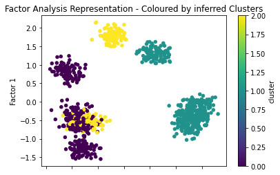
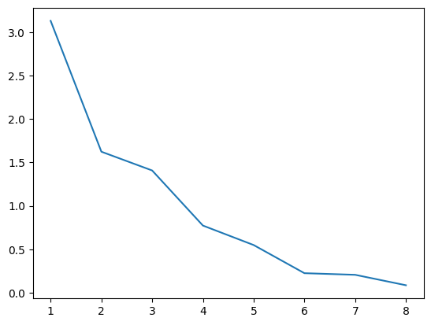
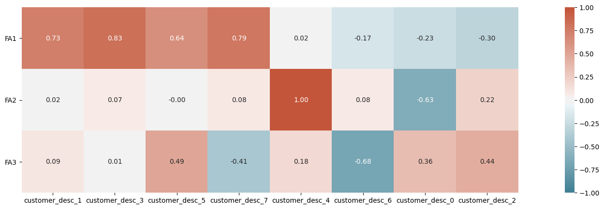

import pandas as pd
from matplotlib import pyplot as plt
import nltk
from sklearn.datasets import make_blobs
from sklearn.cluster import KMeans
from sklearn.metrics import silhouette_samples, silhouette_score
from factor_analyzer import FactorAnalyzer
from sklearn.decomposition import FactorAnalysis
import random
import seaborn as sns
random.seed(30)Create the Fake Customer Purchase data
We create two fake data sets with a discernible structures, but we don’t want the models to work too easily so we sample again from these data pairing both sets as if we have a customer and their products.
X, y = make_blobs(n_samples=10000,
centers=5,
n_features=6,
random_state=0
)
prods = ['product_desc_' + str(x) for x in range(0, 6)]
df_products = pd.DataFrame(data=X, columns=prods)
df_products['Product_Class'] = y
df_products['Product_ID'] = df_products.index
X, y = make_blobs(n_samples=1000,
centers=10,
n_features=8,
random_state=0)
custs = ['customer_desc_' + str(x) for x in range(0, 8)]
df_customer = pd.DataFrame(data=X,
columns=custs)
df_customer['Customer_Class'] = y
df_customer['Customer_ID'] = df_customer.index
# Randomly Select some of the customers to pair with random purchases
day1 = pd.DataFrame(zip(
[random.randint(0, 1000) for x in range(0, 500)],
[random.randint(0, 10000) for x in range(0, 500)]
),
columns=['Customer_ID', 'Product_ID']
)
day2 = pd.DataFrame(zip(
[random.randint(0, 1000) for x in range(0, 500)],
[random.randint(0, 10000) for x in range(0, 500)]
),
columns=['Customer_ID', 'Product_ID'])
purchases = pd.concat([day1, day2],
axis=0,
ignore_index=True)
purchases.head()| Customer_ID | Product_ID | |
|---|---|---|
| 0 | 552 | 773 |
| 1 | 827 | 8608 |
| 2 | 296 | 518 |
| 3 | 625 | 5394 |
| 4 | 30 | 8543 |
df_purchases = None
for purchase in range(0, len(purchases)):
cust_id = purchases['Customer_ID'][purchase]
prod_id = purchases['Product_ID'][purchase]
cust = df_customer[df_customer['Customer_ID'] ==
cust_id]
cust.reset_index(inplace=True, drop=True)
prod = df_products[df_products['Product_ID'] ==
prod_id]
prod.reset_index(inplace=True, drop=True)
temp = pd.concat([prod, cust], axis=1)
if df_purchases is None:
df_purchases = pd.concat([prod, cust], axis=1)
else:
df_purchases = df_purchases.append(
pd.concat([prod, cust], axis=1)
)
df_purchases.reset_index(inplace=True, drop=True)
df_purchases| product_desc_0 | product_desc_1 | product_desc_2 | product_desc_3 | product_desc_4 | product_desc_5 | Product_Class | Product_ID | customer_desc_0 | customer_desc_1 | customer_desc_2 | customer_desc_3 | customer_desc_4 | customer_desc_5 | customer_desc_6 | customer_desc_7 | Customer_Class | Customer_ID | |
|---|---|---|---|---|---|---|---|---|---|---|---|---|---|---|---|---|---|---|
| 0 | -1.233276 | 8.747108 | 9.165746 | -0.007541 | 4.652380 | 1.913970 | 1 | 773 | -6.374916 | -2.257586 | 7.688019 | -7.992522 | 7.593467 | -9.193683 | 10.376847 | -0.388405 | 8.0 | 552.0 |
| 1 | -0.170403 | 8.219852 | 9.710727 | -1.550177 | 5.811414 | 1.492459 | 1 | 8608 | 9.294317 | -2.231715 | 6.061894 | -0.438840 | 1.246116 | 8.820684 | -9.950039 | -7.391761 | 1.0 | 827.0 |
| 2 | -2.822567 | 8.036298 | 10.929105 | -0.935760 | 6.077699 | 1.265250 | 1 | 518 | -8.793580 | 4.805865 | 6.167272 | 5.770659 | 7.451190 | 4.144325 | 1.196351 | 5.414350 | 2.0 | 296.0 |
| 3 | 1.019780 | 6.766354 | -9.152836 | -8.611808 | -8.749707 | 6.637419 | 2 | 5394 | -7.047638 | -2.131113 | 5.768863 | -8.094387 | 6.223832 | -8.834962 | 9.629384 | -1.935227 | 8.0 | 625.0 |
| 4 | 4.321656 | 7.430975 | 8.847703 | 5.921750 | -0.868445 | 5.483210 | 3 | 8543 | -0.169121 | 1.346768 | -10.211423 | 1.709859 | 1.655568 | 1.891809 | 7.856076 | 4.333816 | 4.0 | 30.0 |
| ... | ... | ... | ... | ... | ... | ... | ... | ... | ... | ... | ... | ... | ... | ... | ... | ... | ... | ... |
| 995 | 2.151425 | 3.179085 | 2.337353 | 0.559543 | -1.629433 | 2.493002 | 0 | 8383 | -4.926378 | -1.474424 | 2.848533 | -10.733950 | 4.237231 | 5.048239 | -5.263423 | -7.005510 | 5.0 | 272.0 |
| 996 | 0.475735 | 4.378010 | 2.597665 | 1.569648 | -1.131376 | 3.110801 | 0 | 6141 | 7.821350 | -1.948967 | 6.039587 | 1.739432 | 2.351800 | 8.325224 | -10.263796 | -7.450850 | 1.0 | 616.0 |
| 997 | 4.621406 | 7.791088 | 8.592775 | 6.423716 | 0.915721 | 4.727899 | 3 | 406 | -9.236352 | 2.760513 | -7.290240 | 9.169618 | -0.188279 | -2.443252 | -4.153840 | 6.140598 | 3.0 | 266.0 |
| 998 | -1.720297 | 8.174031 | 9.746428 | -1.849028 | 5.046019 | 0.951072 | 1 | 9737 | -1.411479 | 0.830250 | 5.167232 | -9.188249 | 3.176105 | 4.570698 | -6.300042 | -7.561958 | 5.0 | 263.0 |
| 999 | 2.804878 | 4.882689 | -0.262516 | 0.311810 | -1.867281 | 4.639076 | 0 | 3486 | -6.696620 | 1.945182 | -7.520248 | 8.545794 | 3.743541 | -3.216961 | -4.505348 | 3.400242 | 3.0 | 589.0 |
1000 rows × 18 columns
Preliminary Plotting: Do the Factors seperate the structure?
A worthwhile plot to apply with any dimensional reduction technique (such as PCA or factor analysis) is to check if and how the data seperates when plotted on the reduced plane. In lieu of knowledge of the data we can always compare this representation to the output of a clustering algorithm.
cust_desc = [x for x in df_purchases.columns if
'customer_desc' in x]
X = df_customer[cust_desc]
kmeans = KMeans(init='k-means++',
n_clusters=3,
n_init=30
)
kmeans.fit(X)
clusters = kmeans.predict(X)
X['cluster'] = clusters
sklearn_fa = FactorAnalysis(n_components=2,
rotation='varimax'
)
Y_fa = pd.DataFrame(sklearn_fa.fit_transform(X[cust_desc]))
X = pd.concat([X, Y_fa], axis=1)
X[[0, 1, 'cluster']].plot.scatter(x=0,
y=1,
c='cluster',
colormap='viridis')
plt.title("Factor Analysis Representation - Coloured by inferred Clusters")
plt.ylabel("Factor 1")
plt.xlabel("Factor 2")
plt.style.use('default')
plt.show()/Users/nathanielforde/.local/lib/python3.6/site-packages/ipykernel_launcher.py:9: SettingWithCopyWarning:
A value is trying to be set on a copy of a slice from a DataFrame.
Try using .loc[row_indexer,col_indexer] = value instead
See the caveats in the documentation: https://pandas.pydata.org/pandas-docs/stable/user_guide/indexing.html#returning-a-view-versus-a-copy
if __name__ == '__main__':
We can see here that the factors do a pretty good job of seperating the classes (0, 1), but mix up (2, 1). In addition we can see that there are 7 distinct clusters on the factor analysis representation which suggests that our choice three clustering classes is too low.
Choosing the number of Factors
One suggestive way in which to determine the number of factors which we should extract is to build the skree plot of the eigenvalues and select the number of features where there is a higher relative eigenvalues.
import numpy as np
feature_names = ['customer_desc_' + str(x) for x in range(0, 8)]
fa = FactorAnalyzer(n_factors=3)
fa.fit(X[feature_names], 10)
ev, v = fa.get_eigenvalues()
plt.plot(range(1,X[feature_names].shape[1]+1),ev)
plt.show()
On the basis of this plot we should probably choose no more than two factors at most but we’ll continue with 3 for purposes of illustration. The factor loadings are linear functions of the observed features and so we may interpret the newly created factors by observing which of the observed features play a greater role in their composition.
fa_loading_matrix = pd.DataFrame(fa.loadings_,
columns=['FA{}'.format(i) for
i in range(1, 3+1)],
index=feature_names)
fa_loading_matrix['Highest_loading'] = fa_loading_matrix.idxmax(axis=1)
fa_loading_matrix = fa_loading_matrix.sort_values('Highest_loading')
fa_loading_matrix| FA1 | FA2 | FA3 | Highest_loading | |
|---|---|---|---|---|
| customer_desc_1 | 0.727724 | 0.024771 | 0.091443 | FA1 |
| customer_desc_3 | 0.826998 | 0.068252 | 0.014691 | FA1 |
| customer_desc_5 | 0.637687 | -0.003234 | 0.489801 | FA1 |
| customer_desc_7 | 0.787048 | 0.081877 | -0.414776 | FA1 |
| customer_desc_4 | 0.015911 | 1.001115 | 0.175406 | FA2 |
| customer_desc_6 | -0.172587 | 0.077989 | -0.684129 | FA2 |
| customer_desc_0 | -0.229668 | -0.628541 | 0.355323 | FA3 |
| customer_desc_2 | -0.304156 | 0.217303 | 0.440891 | FA3 |
We can see here that there is probably only one sensible factor to be derived from our dataset.
import seaborn as sns
plt.figure(figsize=(25,5))
# plot the heatmap for correlation matrix
ax = sns.heatmap(fa_loading_matrix.drop('Highest_loading', axis=1).T,
vmin=-1, vmax=1, center=0,
cmap=sns.diverging_palette(220, 20, n=200),
square=True, annot=True, fmt='.2f')
ax.set_yticklabels(
ax.get_yticklabels(),
rotation=0);
communalities = pd.DataFrame(fa.get_communalities(),
index=list(feature_names))
features_comm = list(communalities[communalities[0] > 0.33].index)
print('Total variables/features with communalities >0.33: {}'.format(len(features_comm)))
communalitiesTotal variables/features with communalities >0.33: 8| 0 | |
|---|---|
| customer_desc_0 | 0.574065 |
| customer_desc_1 | 0.538558 |
| customer_desc_2 | 0.334116 |
| customer_desc_3 | 0.688800 |
| customer_desc_4 | 1.033252 |
| customer_desc_5 | 0.646560 |
| customer_desc_6 | 0.503901 |
| customer_desc_7 | 0.798188 |
Testing the Validity of a Hypothetical Factor
Cronbach’s Alpha is a statistical measure of the reliability of the factor analysis derived from a test of the covariances matrix of features which make up the proposed latent factor. A cronbach alpha closer to 1 is desired.
\(\alpha = \frac{K}{K-1}\left(1-\frac{\sum \sigma^2_{x_i}}{\sigma^2_T}\right)\)
where
\(\sigma^2_T = \sum \sigma^2_{x_i} + 2 \sum_{i < j}^K {\rm cov}(x_i,x_j)\)
a combination of the observational measure of variance and inter-metric covariances for each observational variable. This ties this measure to the Factor analysis model since the covariances can be re-expressed in terms of the factor loadings.
\(\sigma^2_T = \sum \sigma^2_{x_i} + 2 \sum_{i < j}^K (l_{i, 1} + \epsilon_{i})(l_{j, 1} + \epsilon_{j})\)
which means that if the factors loadings are fairly high relative the the random components of the variance then we’ll get a ratio that come close to one. Conversely low loadings will ensure that the denominator drags the ratio down.
import numpy as np
def CronbachAlpha(observed_measures):
observed_measures = np.asarray(observed_measures)
sample_vars = observed_measures.var(axis=1, ddof=1)
total_scores = observed_measures.sum(axis=0)
nitems = len(observed_measures)
return nitems / (nitems-1.) * (1 - sample_vars.sum() / total_scores.var(ddof=1))#Collate the observed features
factor1 = [X['customer_desc_1'], X['customer_desc_3'],
X['customer_desc_5'], X['customer_desc_7']]
factor2 = [X['customer_desc_4'], X['customer_desc_0']]
factor3 = [X['customer_desc_5'], X['customer_desc_6'],
X['customer_desc_2']]
#Get cronbach alpha
factor1_alpha = CronbachAlpha(factor1)
#factor2_alpha = CronbachAlpha(factor2)
#factor3_alpha = CronbachAlpha(factor3)
print(factor1_alpha,
factor2_alpha,
factor3_alpha
)0.7889764629492505 -3.382959230225132 -0.8158399732248119Which shows as expected that only one of the proposed factors is sensible.